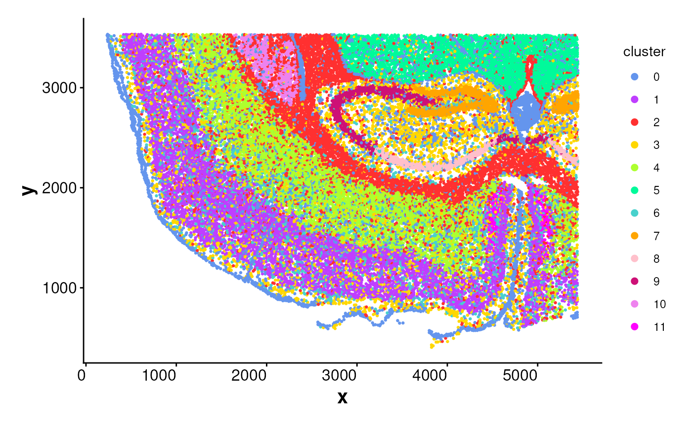
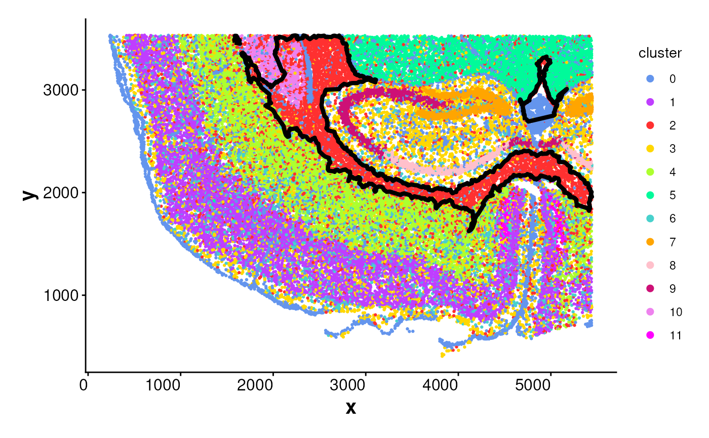
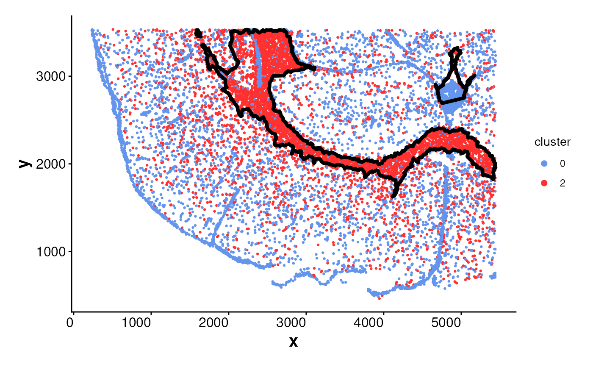
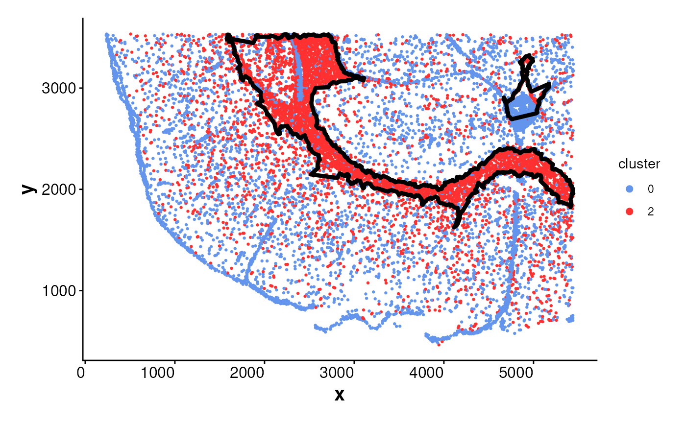
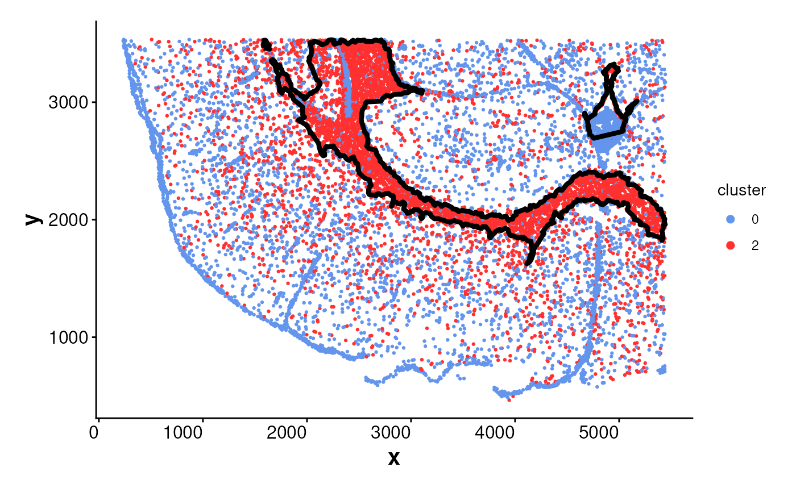
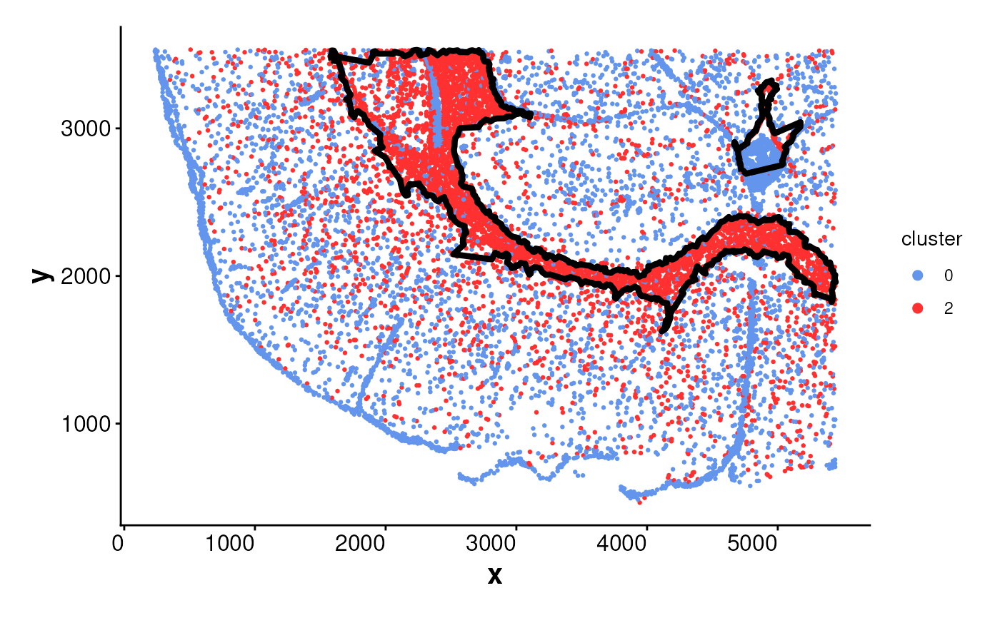

Plots spatial cell locations and overlays cluster or population boundaries
if available.
If boundary is not provided and one_cluster is specified, the boundary
will be automatically generated using the getBoundary() function.
This function supports plotting either all clusters
or a specific cluster using sub_plot = TRUE. Boundaries can be overlaid
as polygons to visualize spatial subregions.
Usage
plotBoundary(
data = NULL,
cluster_col = NULL,
one_cluster = NULL,
boundary = NULL,
colors = colors15_cheng,
point_size = 0.5,
color_boundary = "black",
linewidth_boundary = 1.5,
sub_plot = FALSE,
split_by = NULL,
ncol = NULL,
angle_x_label = 0,
theme_ggplot = theme_spneigh(),
legend_size = 2,
...
)Arguments
- data
A
Seuratobject, aSpatialExperimentobject, or a data frame containing spatial coordinates.- cluster_col
Character scalar specifying the metadata column name containing cluster assignments. If
NULL, a default is used depending on the input object type:"seurat_clusters"forSeuratobjects"cluster"forSpatialExperimentobjects
- one_cluster
The cluster ID to plot and optionally compute its boundary. Required if
sub_plot = TRUEandboundaryis not provided.- boundary
A data frame with columns
x,y, andregion_idor ansfobject ofPOLYGONorLINESTRINGgeometries.- colors
A vector of cluster colors. Default uses
colors15_cheng.- point_size
Numeric. Size of the points representing cells. Default is 0.5.
- color_boundary
Color for boundary lines. Default is
"black".- linewidth_boundary
Numeric. Line width for boundary outlines. Default is 1.5.
- sub_plot
Logical. If
TRUE, only cells from the specifiedone_clusterare plotted. IfFALSE(default), all clusters are plotted.- split_by
Optional column name in
datato facet the plot by (e.g., sample, condition).- ncol
Number of columns in the faceted plot when
split_byis used. Passed toggplot2::facet_wrap(). Default isNULL, which lets ggplot2 determine layout automatically.- angle_x_label
Numeric angle (in degrees) to rotate the x-axis labels. Useful for improving label readability in faceted or dense plots. Default is 0 (no rotation).
- theme_ggplot
A ggplot2 theme object. Default is
theme_spneigh().- legend_size
Numeric. Size of legend keys. Default is 2.
- ...
Additional arguments passed to
getBoundarywhen auto-generating boundaries.
Examples
# Load coordinates
coords <- readRDS(system.file("extdata", "MouseBrainCoords.rds",
package = "SpNeigh"
))
head(coords)
#> x y cell cluster
#> 1 1898.815 2540.963 1 4
#> 2 1895.305 2532.627 2 4
#> 3 2368.073 2534.409 3 2
#> 4 1903.726 2560.010 4 4
#> 5 1917.481 2543.132 5 4
#> 6 1926.540 2560.044 6 4
# Plot all cells without boundaries
plotBoundary(coords)

# Plot one cluster and its boundary
plotBoundary(coords, one_cluster = 2)

# Manually compute boundary and plot
boundary_points <- getBoundary(
data = coords, one_cluster = 2,
eps = 120, minPts = 10
)
plotBoundary(data = coords, boundary = boundary_points)
 # plotBoundary for a SpatialExperiment object
logNorm_expr <- readRDS(system.file("extdata", "LogNormExpr.rds",
package = "SpNeigh"
))
coords_sub <- subset(coords, cluster %in% c("0", "2"))
coords_sub <- as.matrix(coords_sub[, c("x", "y")])
metadata_sub <- subset(
coords[, c("cell", "cluster")],
cluster %in% c("0", "2")
)
spe <- SpatialExperiment::SpatialExperiment(
assay = list("logcounts" = logNorm_expr),
colData = metadata_sub,
spatialCoords = coords_sub
)
plotBoundary(data = spe, one_cluster = 2)

# plotBoundary for a Seurat object
seu_sp <- Seurat::CreateSeuratObject(
assay = "Spatial",
counts = logNorm_expr,
meta.data = metadata_sub
)
SeuratObject::LayerData(seu_sp,
assay = "Spatial",
layer = "data"
) <- logNorm_expr
cents <- SeuratObject::CreateCentroids(coords_sub[, c("x", "y")])
fov <- SeuratObject::CreateFOV(
coords = list("centroids" = cents),
type = c("centroids"),
assay = "Spatial"
)
seu_sp[["fov"]] <- fov
seu_sp$seurat_clusters <- seu_sp$cluster
plotBoundary(data = seu_sp, one_cluster = 2, eps = 120)

# plotBoundary for a SpatialExperiment object
logNorm_expr <- readRDS(system.file("extdata", "LogNormExpr.rds",
package = "SpNeigh"
))
coords_sub <- subset(coords, cluster %in% c("0", "2"))
coords_sub <- as.matrix(coords_sub[, c("x", "y")])
metadata_sub <- subset(
coords[, c("cell", "cluster")],
cluster %in% c("0", "2")
)
spe <- SpatialExperiment::SpatialExperiment(
assay = list("logcounts" = logNorm_expr),
colData = metadata_sub,
spatialCoords = coords_sub
)
plotBoundary(data = spe, one_cluster = 2)

# plotBoundary for a Seurat object
seu_sp <- Seurat::CreateSeuratObject(
assay = "Spatial",
counts = logNorm_expr,
meta.data = metadata_sub
)
SeuratObject::LayerData(seu_sp,
assay = "Spatial",
layer = "data"
) <- logNorm_expr
cents <- SeuratObject::CreateCentroids(coords_sub[, c("x", "y")])
fov <- SeuratObject::CreateFOV(
coords = list("centroids" = cents),
type = c("centroids"),
assay = "Spatial"
)
seu_sp[["fov"]] <- fov
seu_sp$seurat_clusters <- seu_sp$cluster
plotBoundary(data = seu_sp, one_cluster = 2, eps = 120)
